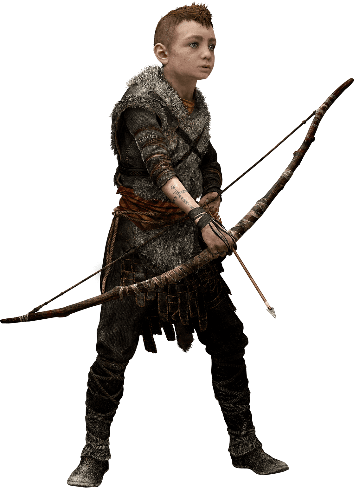
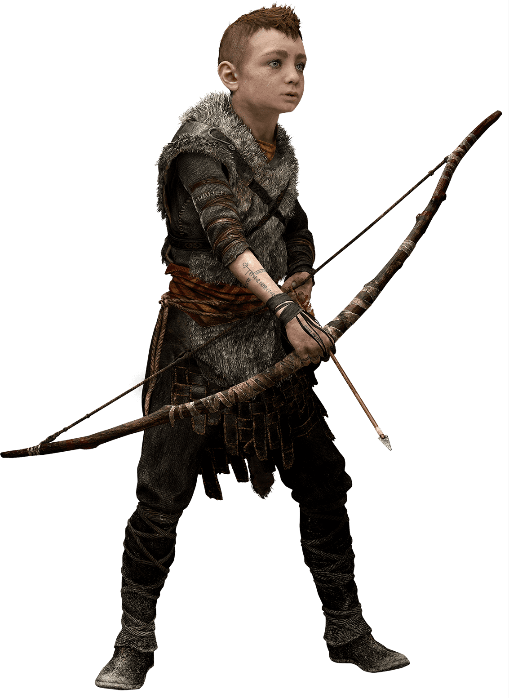
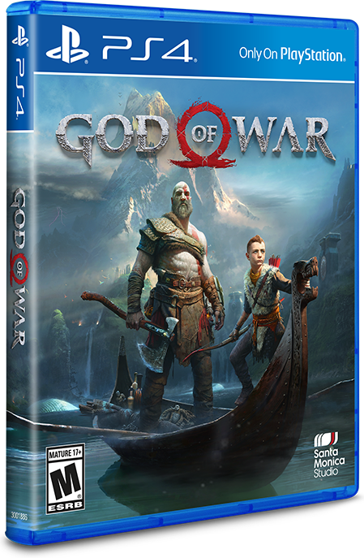

God of War é um jogo eletrônico de ação-aventura desenvolvido pela SIE Santa Monica Studio e publicado pela Sony Interactive Entertainment.
Foi lançado em 20 de abril de 2018 para o PlayStation 4. É o oitavo jogo da série God of War e a sequência dos eventos ocorridos em God of War III. O título é um recomeço para a franquia e leva a série para o mundo da mitologia nórdica — todos os jogos anteriores tinham como cenário a mitologia grega. Kratos retorna como o protagonista e agora tem ao seu lado um filho chamado Atreus. Kratos atua como um mentor e protetor de Atreus e tem de dominar a raiva que o impulsionou por muitos anos.
Descrita como uma "reimaginação" para a franquia, a jogabilidade foi completamente reconstruída, com uma grande mudança sendo que Kratos não usa mais suas lâminas duplas como armas principais, ao invés disso, ele usa um machado de batalha mágico chamado Machado Leviatã. Outra mudança notável é a câmera; o jogo usa um sistema de câmera livre sobre o ombro em oposição à câmera fixa vista nos títulos anteriores. Há também elementos semelhantes aos de RPG e o filho de Kratos, Atreus, pode fornecer assistência durante o jogo. Um pequeno jogo baseado em texto, chamado God of War: A Call from the Wilds, foi lançado em 1 de fevereiro de 2018 através do Facebook Messenger, e segue Atreus em sua primeira aventura nas selvas nórdicas.
God of War foi aclamado pela crítica especializada, recebendo elogios por seu combate, visual, design do mapa, história e personagens. Recebeu pontuações perfeitas de vários revisores e é o jogo de melhor recepção da série God of War e o terceiro jogo de PlayStation 4 com a maior pontuação no Metacritic. Muitos o consideraram como uma "conquista técnica" e um dos melhores jogos já feitos para o PlayStation 4 e da oitava geração de consoles no geral.
